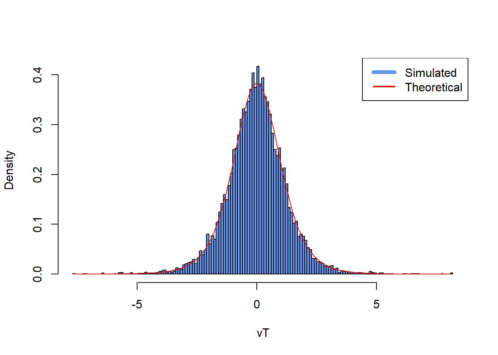
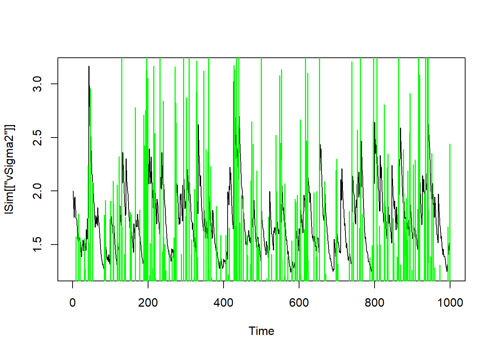

set.seed(134)
### Auxiliary functions ###
gamma.pdf <- function(x, k, theta) {
return(theta^k * x^(k-1) * exp(-theta*x)/gamma(k))
}
exponential.pdf <- function(x, lambda) {
return(lambda * exp(-lambda*x))
}
Exponential.Simulate <- function(lambda, size = 1) {
V <- runif(size)
return(-1/lambda * log(V))
}
Gamma.Simulate <- function(k, theta, size = 1) {
lambda <- theta/k
c <- k^k * exp(-k+1) / gamma(k)
U <- rep(NA, size)
Y <- rep(NA, size)
X <- rep(NA, size)
Unaccepted <- rep(TRUE, size)
while (any(Unaccepted)) {
UnacceptedCount <- sum(Unaccepted)
U <- runif(UnacceptedCount)
Y <- Exponential.Simulate(lambda, UnacceptedCount)
Accepted_ThisTime <- Unaccepted[Unaccepted] &
( U <= ( gamma.pdf(Y, k, theta) / exponential.pdf(Y, lambda)/c ) )
X[Unaccepted][Accepted_ThisTime] <- Y[Accepted_ThisTime]
Unaccepted[Unaccepted] <- !Accepted_ThisTime
}
return(X)
}
vW <- Gamma.Simulate(k = 3, theta = 3, size = 10000)21 Retake exam 2021
21.1 Problem 1:
Begin by setting the seed to 134.
- Use the Acceptance-Rejection method with an Exp(\(\lambda\)) envelope to simulate \(T = 10,000\) draws from a Gamma(\(k, \theta\)) distribution with parameters \((k, \theta) = (3,3)\). You may set \(\lambda = \frac{\theta}{k}\) and \[ c = \frac{k^{k} e^{-(k-1)}}{\Gamma(k)} \] where \(\Gamma\) is the gamma function. The density function of the Gamma distribution is \[ f(x) = \frac{\theta^k}{\Gamma(k)} x^{k-1} e^{-\theta x}, \quad x > 0 \] while for the Exponential distribution it is \[ g(y; \lambda) = \lambda e^{-\lambda y}, \quad y > 0. \] Use the inversion method to generate the Exponential random variables. The corresponding CDF is \[ G(y) = 1 - e^{-\lambda y}. \] Store your Gamma random variables in a vector
vW.
Solution:
- Use the Box-Muller algorithm to simulate a sample of length \(T = 10,000\) from a Normal(0,1) distribution. Store your Normal random variables in a vector
vZ.
Solution:
- If \(Z \sim \text{Normal}(0,1)\) and \(W \sim \text{Gamma}\left(\frac{\nu}{2}, \frac{1}{2}\nu\right)\) then \(\frac{Z}{\sqrt{W}} \sim t(\nu)\). Use this result and the vectors
vZandvWgenerated in problems (1) and (2) to create 10,000 random variables from a Student’s \(t\) distribution with \(\nu\) degrees of freedom. Store these 10,000 draws in a vectorvT. Then, create a histogram ofvTand superimpose the theoretical density in red. Setbreaks = 200in your call tohist().
vT <- 1 / sqrt(vW) * vZ
hist(vT, breaks = 200, freq = FALSE,
main = "",
col = "cornflowerblue",
xlim = c(min(vT), max(vT)))
xticks = seq(min(vT), max(vT), 0.1)
lines(xticks, dt(xticks, 6), col = "red")
legend("topright", legend = c("Simulated", "Theoretical"), lty = c(1, 1), lwd = c(5, 2), col = c("cornflowerblue", "red"))
- Write a function which takes three inputs:
iN,iAandiB. The purpose of the function is to extract those integers smaller than or equal toiNthat haveiAoriBas factors. The function must return alistwhich contains two elements - a vector with the extracted numbers, and an integer which is the sum of this vector. SetiN = 300,iA = 11andiB = 42when you run your function. As an example, foriN = 10,iA = 3andiB = 5the extracted numbers are (3, 5, 6, 9, 10) and their sum is 33.
Solution:
f <- function(iN, iA, iB) {
vX <- seq(1:iN)
vOut <- vX[vX %% iA == 0 | vX %% iB == 0]
return(list(
numbers = vOut,
sumofnumbers = sum(vOut)
))
}
f(iN = 300, iA = 11, iB = 42)
#> $numbers
#> [1] 11 22 33 42 44 55 66 77 84 88 99 110 121 126 132 143 154 165 168
#> [20] 176 187 198 209 210 220 231 242 252 253 264 275 286 294 297
#>
#> $sumofnumbers
#> [1] 5334- Write a function which returns the smallest natural number which is evenly divisible by all positive integers contained in a vector
vX. Use this function to find the smallest number divisible byvX = seq(1, 15). As an example, the smallest number which is evenly divisible by the vectorvX = (3, 5, 7)is 105.
Solution:
21.2 Problem 2: (Constrained) Optimization, C++, and Packaging
Note: This problem is best solved in order from 1 - 5.
In this problem, you are supposed to work with the mDATA_retake.r file provided with the exam. It contains the daily stock returns for the stocks of Danske Bank from 9th of June 2016 til 9th of March 2021 traded on the Copenhagen Stock Exchange. In the following, we denote \(r_t\) as the return of Danske Bank at time period \(t\).
- Load the data file
mDATA_retake.rinto your R workspace usingreadRDS().
Solution:
set.seed(123)
genData <- function() {
# --- Generate mDATA.r ---
set.seed(123) # for reproducibility
# True parameters for data generation
T_obs <- 1200 # Number of observations (approx 4.75 years of daily data)
# GARCH parameters for stock A
omega_A_true <- 0.000001
alpha_A_true <- 0.08
beta_A_true <- 0.9
# GARCH parameters for stock B
omega_B_true <- 0.000001
alpha_B_true <- 0.09
beta_B_true <- 0.91
# Constant conditional correlation
rho_true <- 0.6
# Initialize vectors
r_A <- numeric(T_obs)
r_B <- numeric(T_obs)
sigma2_A_t <- numeric(T_obs)
sigma2_B_t <- numeric(T_obs)
# Initial unconditional variances
sigma2_A_t[1] <- omega_A_true / (1 - alpha_A_true - beta_A_true)
sigma2_B_t[1] <- omega_B_true / (1 - alpha_B_true - beta_B_true)
# Simulate GARCH processes and returns
# Generate correlated normal innovations
innovations <- matrix(rnorm(2 * T_obs), ncol = 2)
chol_R <- matrix(c(1, rho_true, rho_true, 1), nrow = 2)
chol_decomp <- chol(chol_R) # Cholesky decomposition of the correlation matrix
correlated_innovations <- innovations %*% chol_decomp
for (t in 1:T_obs) {
# Generate returns
r_A[t] <- sqrt(sigma2_A_t[t]) * correlated_innovations[t, 1]
r_B[t] <- sqrt(sigma2_B_t[t]) * correlated_innovations[t, 2]
# Update conditional variances for next period (if not the last observation)
if (t < T_obs) {
sigma2_A_t[t+1] <- omega_A_true + alpha_A_true * r_A[t]^2 + beta_A_true * sigma2_A_t[t]
sigma2_B_t[t+1] <- omega_B_true + alpha_B_true * r_B[t]^2 + beta_B_true * sigma2_B_t[t]
}
}
# Create the data matrix
simulated_mDATA <- cbind(r_A, r_B)
colnames(simulated_mDATA) <- c("DanskeBank", "Orsted")
return(simulated_mDATA)
}
mDATA <- genData()You want to model the volatility of the stock. You assume that, for all periods \(t=1, \dots, T\), the stock return \(r_t\) are generated by a location scale model \[ r_t = \mu + \varepsilon_t \sigma_t \] with conditional variances each following a zero drift GARCH process \[ \sigma^2_{t} = \alpha r^2_{t-1} + \beta \sigma^2_{t-1} \] and \(\varepsilon_t\) following a \(t\)-distribution with \(\nu\) degrees of freedom conditional on the information from all previous periods (denoted as \(F_{t-1}\)), i.e \[ f(\varepsilon_t | F_{t-1}) = \frac{\Gamma\left(\frac{\nu+1}{2}\right)}{\sqrt{\nu \pi} \Gamma\left(\frac{\nu}{2}\right)} \left(1 + \frac{\varepsilon_t^2}{\nu}\right)^{-\frac{\nu+1}{2}}. \] The likelihood functions of the returns is then given by \[ L(\mu, \alpha, \beta, \nu) = \prod_{t=1}^T f(r_t | F_{t-1}). \]
- Write an R function that returns the average negative log-likelihood function of a reparameterized version of the model above for periods \(t=2,3,\dots,T\). It should
- take a vector of parameters as first input and a return series of length \(T\) as second input.
- always fulfill the following constraints \(\alpha + \beta = 1, 0 < \alpha < 1\), and \(\nu > 2\). Hint: Initialize the conditional variance processes at \(t=1\) with \(\sigma_1^2\) equal to the unconditional variance of your returns. You can use
dt()to calculate the density of a t-distributed random variable in R. Or you can use the formula above withgamma()for the \(\Gamma\)-function in R.
Solution:
fAvgNegLogLik <- function(vParams, vInput) {
dMu <- vParams[1]
dAlpha <- exp(vParams[2]) / (1 + exp(vParams[2]))
dBeta <- 1 - dAlpha
dNu <- 2 + exp(vParams[4])
dSum <- 0
dT <- length(vInput)
vSigma2 <- numeric(dT)
vSigma2[1] <- var(vInput)
for (t in 2:dT) {
vSigma2[t] <- dAlpha * vInput[t - 1]^2 + dBeta * vSigma2[t-1]
dSum <- dSum + log(dt((vInput[t] - dMu) / sqrt(vSigma2[t]), dNu)) - log(sqrt(vSigma2[t]))
}
return(-dSum / (dT - 1))
}- Use the BFGS algorithm with
optim()to find the maximizers of the reparameterized log-likelihood function in 2). Use starting values that correspond to the original likelihood parameters \[ \mu = 0, \alpha = 0.90, \beta = 0.10, \nu = 5. \] Retransform your results. What are the estimates for \((\mu, \alpha, \beta, \nu)\)?
vParams <- c(0, log(0.9/(1-0.9)), 1 - log(0.9/(1-0.9)), log(5 - 2))
optim_results <- optim(vParams, fAvgNegLogLik, vInput = mDATA[, 1], method = "BFGS")
optim_results
#> $par
#> [1] 0.0001021925 -2.9909391286 -1.1972245773 6.1836752296
#>
#> $value
#> [1] -3.631868
#>
#> $counts
#> function gradient
#> 54 24
#>
#> $convergence
#> [1] 0
#>
#> $message
#> NULL
vParams <- optim_results$par
# retransformation
dMu_star <- vParams[1]
dAlpha_star <- exp(vParams[2]) / (1 + exp(vParams[2]))
dBeta_star <- 1 - dAlpha_star
dNu_star <- 2 + exp(vParams[4])
print(paste0("Est. mu: ", dMu_star))
#> [1] "Est. mu: 0.000102192473262923"
print(paste0("Est. alpha: ", dAlpha_star, " vs. true: ", 0.08))
#> [1] "Est. alpha: 0.0478368957544601 vs. true: 0.08"
print(paste0("Est. beta: ", dBeta_star, " vs. true: ", 0.90))
#> [1] "Est. beta: 0.95216310424554 vs. true: 0.9"
print(paste0("Est. nu: ", dNu_star))
#> [1] "Est. nu: 486.770328670692"- Write a C++ function using Rcpp and RcppArmadillo that can be loaded via
sourceCpp(). It should simulate conditional variances and returns from a zero mean GARCH(1,1) for \(t=1, \dots, T\): \[ r_t = \varepsilon_t \sigma_t \] \[ \sigma_t^2 = \omega + \alpha \varepsilon_{t-1}^2 + \beta \sigma_{t-1}^2 \] with errors \(\varepsilon_t\) coming from an arbitrary distribution function specified by the user. The function should have the following inputs
The function should return an arma::List object with two vectors containing i) conditional variances for all time periods and ii) simulated return series. Use your function to simulate 1000 draws from a GARCH(1,1) process with t-distributed errors with 5 degrees of freedom. Plot the volatilities. Hint: If you would like to convert a one-dimensional SEXP object with numerical values in C++ to use it as a double for standard calculations, you can use REAL() in C++. Example:
SEXP a = myFunction(input);
double x = *REAL(a);
double y = 2*x + pow(x,2);// [[Rcpp::depends(RcppArmadillo)]]
#include <RcppArmadillo.h>
using namespace arma;
using namespace Rcpp;
// Helper function to get a shock
inline double get_shock(Function f, const vec& vInputs) {
SEXP s;
int n_extra_args = vInputs.n_elem;
if (n_extra_args == 0) { // e.g. f takes only n, like a pre-wrapped user function or rnorm(n) with defaults
s = f(1);
} else if (n_extra_args == 1) { // e.g. rt(n, df) or rnorm(n, mean)
s = f(1, vInputs[0]);
} else if (n_extra_args == 2) { // e.g. rnorm(n, mean, sd)
s = f(1, vInputs[0], vInputs[1]);
} else {
// Fallback or error for more arguments, or could extend this if/else
Rcpp::stop("vInputs has too many elements for this simplified handler. Max 2 supported.");
}
if (TYPEOF(s) != REALSXP || Rf_length(s) != 1) {
Rcpp::stop("The user-supplied function 'f' did not return a single numeric value.");
}
return Rcpp::as<double>(s);
}
// [[Rcpp::export]]
List GarchSim(int iT_in, vec vParams, Function f, vec vInputs) {
int iT = iT_in;
if (iT <= 0) { iT = 1; } // Simplified default handling
double dOmega = vParams[0];
double dAlpha = vParams[1];
double dBeta = vParams[2];
vec vY(iT, fill::zeros);
vec vSigma2(iT, fill::zeros);
if (dOmega <= 0 || dAlpha < 0 || dBeta < 0 || (dAlpha + dBeta) >= 1.0) {
Rcpp::stop("Invalid GARCH parameters.");
}
double unconditional_variance = dOmega / (1.0 - dAlpha - dBeta);
vSigma2(0) = unconditional_variance;
double current_eps = get_shock(f, vInputs); // Call helper
vY(0) = sqrt(vSigma2(0)) * current_eps;
for (int t = 1; t < iT; t++) {
vSigma2(t) = dOmega + dAlpha * pow(current_eps, 2) + dBeta * vSigma2(t-1);
if (vSigma2(t) <= 0) vSigma2(t) = unconditional_variance;
current_eps = get_shock(f, vInputs); // Call helper
vY(t) = sqrt(vSigma2(t)) * current_eps;
}
return List::create(_["vSigma2"] = vSigma2, _["vY"] = vY);
}suppressMessages(library(Rcpp))
#> Warning: pakke 'Rcpp' blev bygget under R version 4.3.3
suppressMessages(library(RcppArmadillo))
#> Warning: pakke 'RcppArmadillo' blev bygget under R version 4.3.3
sourceCpp("exam2021recpp.cpp")
iT <- 1000
dOmega <- 0.1
dAlpha <- 0.05
dBeta <- 0.9
df_t <- 5
lSim <- GarchSim(iT, c(dOmega, dAlpha, dBeta), f = rt, vInputs = df_t)
plot(1:1000, lSim[["vSigma2"]], type = "l", lty = 1, xlab = "Time")
lines(1:1000, lSim[["vY"]],col="green")
- Create an R package that contains the functions from 1.) and 4.) and edit the title description to “This is my exam package”. Export the package as a bundled development version. Remark: If you cannot solve 1.) or 4.) create a package that contains an R and a C++ function with single scalar inputs that always return the number 5.